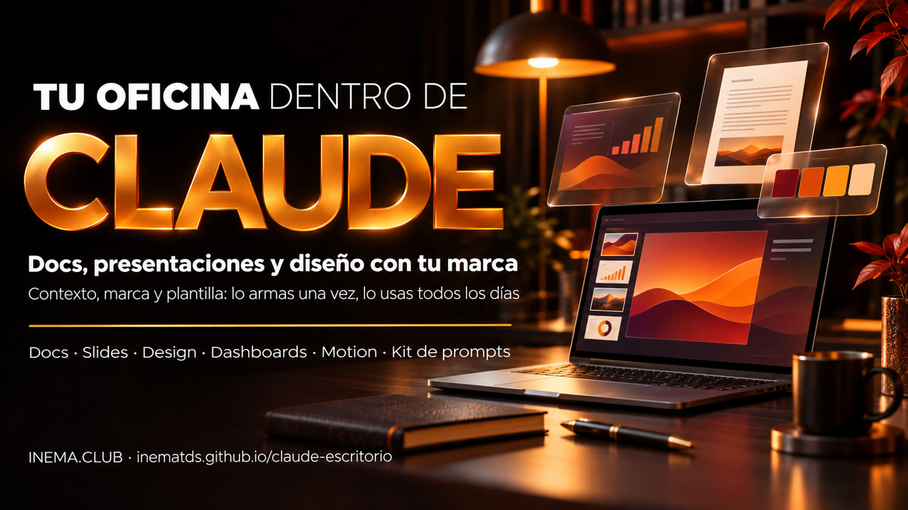

Documentos, presentaciones y diseê±os con la identidad de tu empresa, creados en una conversaciê³n; tres de ellos incluso en el plan gratuito. Configêºralo una vez en 4 pasos y deja de empezar desde cero.

Este es un kit gratuito para usar Claude como oficina: redactar documentos, preparar presentaciones, crear piezas de diseê±o y, en algunos planes, paneles de datos y animaciones. Estê¡ pensado para quienes trabajan solos o en equipos pequeê±os y estê¡n cansados de explicar su marca y su negocio cada vez. El kit incluye un modelo de ê«quiê©n soyê» para pegar en un Proyecto de Claude, prompts listos para cada herramienta y una lista de verificaciê³n de lo que incluye cada plan. Para usarlo, solo necesitas una cuenta de Claude (la gratuita ya sirve para Docs, Slides y Design) y un navegador.
Artifacts es el nombre que Claude les da a las cosas que creas con ê©l y que quedan guardadas: documentos, presentaciones, diseê±os y paneles. Aparecen en la pestaê±a Artifacts (en el menêº de la izquierda de claude.ai o directamente en claude.ai/artifacts). Allê eliges un modelo o simplemente lo pides en la conversaciê³n. Lo que creas es privado hasta que lo compartes y se puede exportar como PowerPoint, Google Slides, PDF, MP4 o HTML.
Una buena herramienta sin contexto entrega resultados genê©ricos. El kit empieza con un Proyecto que le dice a Claude quiê©n eres, quê© ofreces y cê³mo te comunicas.
Un design system ê¢â¬âel ê«manual de marcaê» que Claude guarda y usa por su cuenta: colores, fuentes, logo y estiloê¢â¬â creado a partir de un PDF, capturas del sitio o del logo. Con una sola referencia basta para empezar; despuê©s, todo tendrê¡ tu sello.
La primera propuesta o el primer informe que quede bien se convierte en modelo. Los siguientes parten de ahêÂ, con la misma estructura y el mismo estilo visual.
Nombres oficiales: Claude Docs, Claude Slides, Claude Design, Claude Dashboards y Claude Motion. Verificado en las pê¡ginas de Anthropic el 04/11/2026.
El documento que escribes junto con Claude y tu equipo, al mismo tiempo.
Presentaciones hechas a partir de notas, informes o lo que ya estê¡ en la conversaciê³n.
Publicaciones, folletos, one-pagers, pê¡ginas de venta y prototipos con tu design system.
Una pregunta en espaê±ol se convierte en un panel que se actualiza y se conecta a tu base de datos o sistema de ventas (CRM, como Salesforce).
Animaciones breves creadas con cê³digo, que se reproducen como video y se descargan en MP4.
Son privadas por defecto; puedes invitar a otras personas a ê«verê» o ê«editarê». Se pueden editar desde el celular. Anthropic afirma que ya se crearon mê¡s de 45 millones de documentos, presentaciones y diseê±os en Claude.
Configêºralo una vez y êºsalo todos los dêÂas. Los pasos 1 y 2 toman una tarde; los pasos 3 y 4 se repiten cada semana.
No tienes que instalar nada. Todo sucede en el navegador o en la app de Claude.
El plan gratuito ya incluye Docs, Slides y Design. Dashboards requiere un plan pago; Motion, un plan Team o Enterprise. Consulta la tabla de planes.
Un PDF o una presentaciê³n que te guste, capturas de las pê¡ginas del sitio o el logo. Con una referencia basta para empezar.
La propuesta, el informe o la publicaciê³n que haces cada semana. Esa serê¡ tu primer modelo.
Cada paso tiene un archivo listo en el kit. Haz clic en el nombre del archivo, usa el botê³n Copy raw file (êÂcono de dos hojas) en GitHub, reemplaza lo que estê¡ entre [corchetes] y pê©galo en Claude.
En claude.ai, abre Projects (menêº de la izquierda) ê¢â¬Âº New project. Dentro del Proyecto hay un campo de Instructions: pega ahê el modelo kit/contexto/instrucoes-do-projeto.md ya completado. ê¿Prefieres no completarlo por tu cuenta? Usa el prompt para que Claude te entreviste. Para ver cê³mo queda, abre el ejemplo completado (una consultora para clêÂnicas). Sube tambiê©n 2 o 3 archivos de referencia (una presentaciê³n comercial o una propuesta que haya funcionado).
# kit/prompts/01-entrevista-contexto.md (fragmento) Quiero crear las instrucciones de un Proyecto en Claude para que trabajes como mi asistente de oficina. EntrevêÂstame. - Haz una pregunta breve por vez y espera mi respuesta. - Incluye: quiê©n soy; mi oferta; mis clientes y sus objeciones; pruebas reales; mi forma de hablar; mi marca. - No inventes nada. Deja fuera lo que no sepa.
En una conversaciê³n dentro de tu Proyecto, adjunta el PDF de tu marca, capturas del sitio o el logo y pide el design system. Extrae colores, fuentes, uso del logo y estilo. El resultado es aproximado: revisa una vez los colores con la hoja kit/design-system-modelo.md. Despuê©s, para verlo o editarlo: en la configuraciê³n de Claude, busca Design systems (en la app en inglê©s aparece en Settings ê¢â¬Âº Capabilities).
# kit/prompts/02-design-system.md (fragmento) Adjuntê© el PDF de mi marca. Crea un design system para mi marca. 1. Extrae: paleta (cê³digo y uso de cada color), fuentes, logo sobre fondo claro y oscuro, espaciados, esquinas, estilo de los êÂconos y las fotos. 2. Muê©strame una muestra: portada de presentaciê³n, diapositiva, publicaciê³n cuadrada, botê³n. 3. Enumera lo que NO encontraste en los archivos y pregêºntame antes de inventar.
Elige la herramienta segêºn la pieza. El caso que mê¡s tiempo ahorra: de la reuniê³n a la propuesta. Pega las notas de la reuniê³n, pide que investigue el sitio del cliente y que prepare una propuesta con el logo del cliente en la portada, no el tuyo.
# kit/prompts/03-slides-proposta.md (fragmento) Crea una propuesta en diapositivas para [CLIENTE], con mi design system. 1. Primero, muê©strame la estructura y espera mi OK. 2. Investiga el sitio pêºblico de [cliente.com.br] y enumera 3 preguntas pendientes. 3. Portada con el nombre y el logo DEL CLIENTE. 4. Problema ê¢â â quê© cambia ê¢â â cê³mo lo hacemos ê¢â â plazo ê¢â â inversiê³n ê¢â â siguiente paso. 5. Mê¡ximo 10 diapositivas, con notas del presentador. No inventes cifras.
Otras piezas: documento con el Claude de un colega (04-docs-colega.md), publicaciê³n o pê¡gina de venta (05-design-peca.md), panel de nêºmeros (06-dashboard-numeros.md) y animaciê³n (07-motion-explicativo.md).
Cuando apruebes una pieza, pêÂdele a Claude que describa su estructura y guê¡rdala en el Proyecto como ê«Modelo de ê¢â¬Â¦ê» (en el Proyecto, agrega un archivo con ese texto; si es corto, pê©galo en las Instrucciones). A partir de ahêÂ, solo tienes que pedir ê«igual al modeloê» y cambiar lo nuevo. Compê¡rtelo con el equipo para que puedan ê«verê» o ê«editarê».
# kit/prompts/08-reusar-modelo.md (fragmento) Nueva propuesta para [cliente], igual al ê«Modelo de propuestaê». Quê© cambia: [notas de la nueva reuniê³n]. Antes de armar todo, muê©strame solo lo que cambiê³ respecto al modelo.
Un buen panel responde a una sola pregunta: ê«ê¿estoy llegando a donde quiero?ê». Separa el indicador que quieres alcanzar al final de los que puedes mover hoy.
| Negocio | Indicador de resultado (el objetivo) | Indicadores que impulsan (lo que puedes cambiar) |
|---|---|---|
| ClêÂnica | Consultas realizadas en el mes | Primeras consultas agendadas ê· ausencias confirmadas el dêÂa anterior ê· citas de seguimiento agendadas |
| ConsultorêÂa | Ingresos del mes | Reuniones realizadas ê· propuestas enviadas ê· propuestas respondidas |
| Tienda en lêÂnea | Pedidos pagados | Visitas ê· carritos abiertos ê· carritos recuperados |
| Canal de videos | Suscriptores | Videos publicados por semana ê· visualizaciones por video |
Ejemplos ilustrativos. Antes de compartir el panel, haz clic en cada nêºmero y verifica la consulta y la fecha de la êºltima actualizaciê³n: Anthropic no ha publicado una tasa de acierto de las consultas.
ê¿No sabes quê© plan tienes? Settings ê¢â¬Âº Plan. Verificado el 04/11/2026 en claude.com/features/artifacts y en el centro de ayuda de Claude. Los planes cambian: consulta claude.com/pricing.
| Herramienta | Gratuito | Pro / Max / Ultra | Team | Enterprise |
|---|---|---|---|---|
| Docs | ê¢Å⦠sê | ê¢Å⦠sê | ê¢Å⦠sê | ê¢Å⦠sê |
| Slides | ê¢Å⦠sê | ê¢Å⦠sê | ê¢Å⦠sê | ê¢Å⦠sê |
| Design + design system | ê¢Å⦠sê | ê¢Å⦠sê | ê¢Å⦠sê | ê¢Å⦠sê |
| Dashboards | ê¢ÂÅ no | ê°Å¸Â§Âª beta | ê°Å¸Â§Âª beta | ê°Å¸Â§Âª beta (lo habilita el administrador) |
| Motion | ê¢ÂÅ no | ê¢ÂÅ no | ê°Å¸Â§Âª beta | ê°Å¸Â§Âª beta (lo habilita el administrador) |
El sitio separado claude.ai/design cerrarê¡ el 14/12/2026. Quienes tengan un design system allê pueden migrarlo desde la pê¡gina Artifacts (ê«Migrate team design systemsê»).
ê«Haz una diapositiva sobre mi servicioê» sin un Proyecto da como resultado una diapositiva de cualquier empresa. Haz primero el paso 1.
Un nêºmero, testimonio o cliente inexistente destruye la confianza. La regla ê«no inventes, preguntaê» ya estê¡ en el modelo de instrucciones.
En el material para el cliente, la portada es suya: su nombre y su logo. El tuyo va al final.
Dashboards muestra la consulta de cada nêºmero. Haz clic y revêÂsala antes de enviê¡rselo a alguien.
La pieza aprobada se convierte en un modelo (paso 4). Asê es como ahorras tiempo.
Todo es privado al crearse. Invita solo a quienes lo necesitan, con permiso para ê«verê» o ê«editarê».
Haz clic en el nombre del archivo para abrirlo en GitHub. Usa el botê³n Copy raw file (êÂcono de dos hojas, en la esquina superior derecha del texto) y pê©galo en Claude. No necesitas una cuenta de GitHub.
| Archivo | Para quê© sirve |
|---|---|
kit/contexto/instrucoes-do-projeto.md | Modelo de ê«quiê©n soyê» para las Instructions del Proyecto (paso 1) |
kit/contexto/exemplo/instrucoes-clinica.md | El mismo modelo completado con un ejemplo ficticio |
kit/prompts/01-entrevista-contexto.md | Claude te entrevista y redacta el contexto |
kit/prompts/02-design-system.md | Tu marca se convierte en un design system (paso 2) |
kit/design-system-modelo.md | Hoja para revisar colores, fuentes y logo |
kit/prompts/03-slides-proposta.md | De la reuniê³n a la propuesta en diapositivas |
kit/prompts/04-docs-colega.md | Documento con Claude para un colega + rutina semanal |
kit/prompts/05-design-peca.md | Publicaciê³n, folleto o pê¡gina de venta con tu marca |
kit/prompts/06-dashboard-numeros.md | Elegir los nêºmeros y armar el panel |
kit/prompts/07-motion-explicativo.md | Un informe se convierte en una animaciê³n de 30 segundos |
kit/prompts/08-reusar-modelo.md | La pieza aprobada se convierte en un modelo (paso 4) |
kit/checklist-planos.md | Quê© incluye tu plan + lista de verificaciê³n antes de compartir |
Las 5 herramientas y el mê©todo en 4 pasos, en 2 min 32 s (en portuguê©s).
Versiê³n corta (reel) en Instagram y TikTok: @ARCKHê.tds